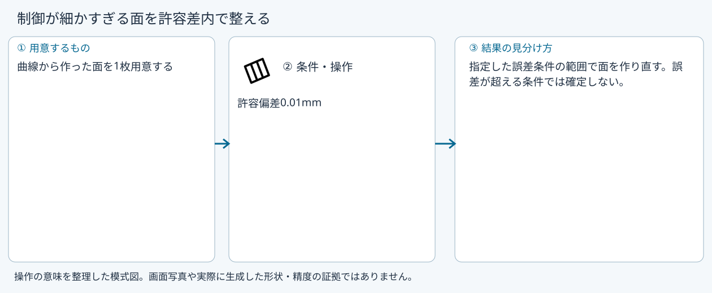
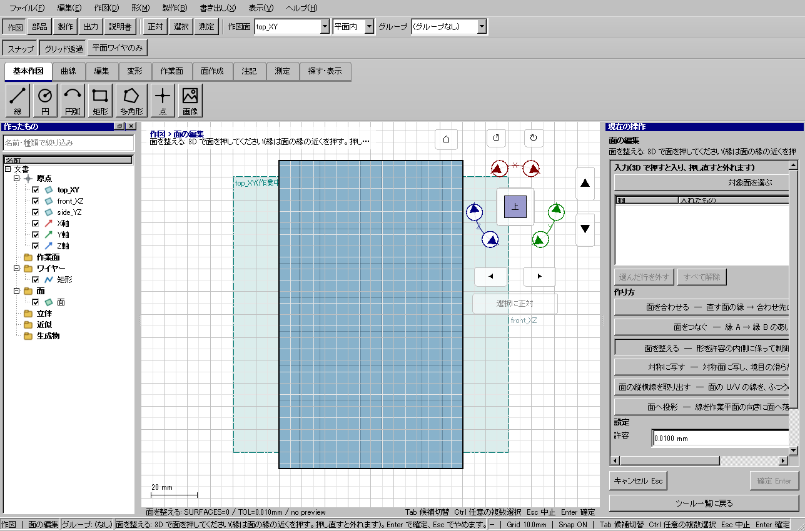

面を整える
面を整える
具体例: 制御が細かすぎる面を許容差内で整える

準備
曲線から作った面を1枚用意する
操作手順
- 面を整えるを選ぶ
- 面を選択する
- 許容偏差0.01mmを設定し、誤差を確認して確定する
設定: 許容偏差0.01mm
結果を確認
指定した誤差条件の範囲で面を作り直す。誤差が超える条件では確定しない。
取消・やり直し
ダイアログの取消、またはペインの取消を使います。即時操作には未確定段階がありません。 確定済みの文書変更はCtrl+Z、やり直しはCtrl+Yです。保存・書出し済みのファイルはUndoの対象ではありません。
進めない場合
形を許容の内側に保ったまま、制御点の少ない面に作り直します。前後の最大のずれと
対象欄と3Dの強調を照合し、必要な線・面・部品を各役割へ指定します。処理中は計算表示を確認し、取消が可能な処理は取消を使います。
Windows版の操作画面
